flowchart LR A[Fork] --> B[Clone] B --> C[Branch] C --> D[Edit] D --> E[Add/Commit] E --> F[Push] F --> G[Pull Request]
Lecture 9: Git and GitHub

Setup
Go through steps below so we can begin.
Fork a GitHub repo
1. Navigate to https://github.com/
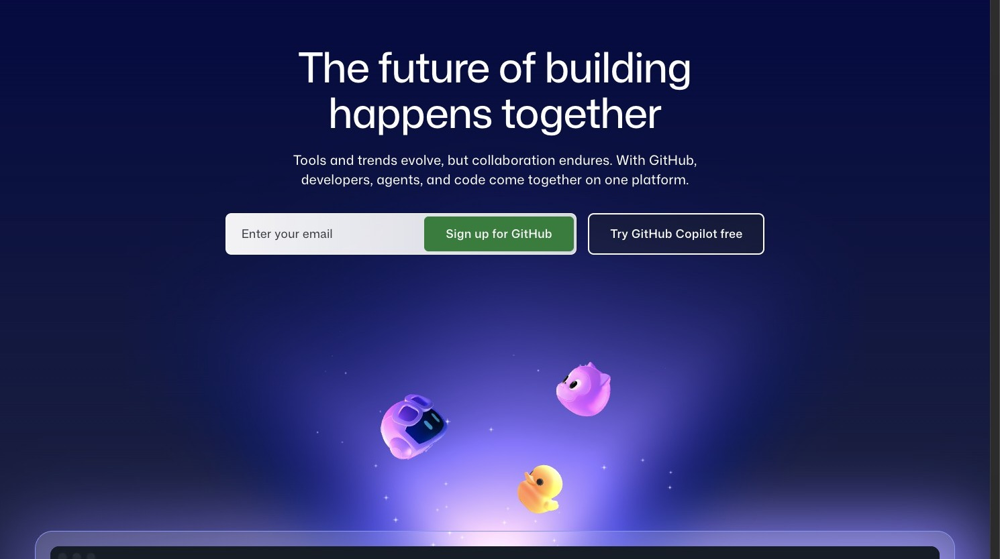
2. Click “Sign in”
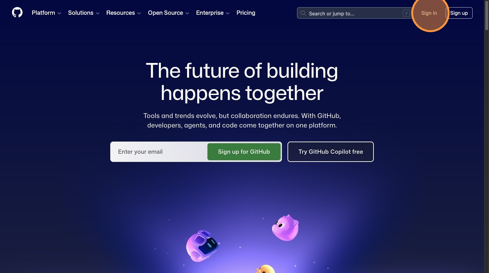
3. Click the “Username or email address” field.
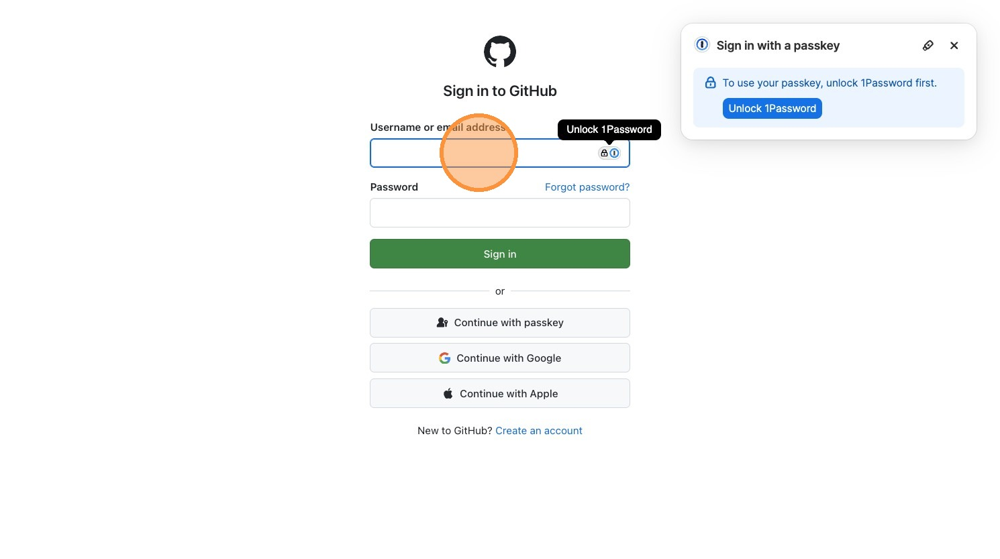
4. Switch to http://github.com/nekrut/bmmb554_foo_bar
Paste the following URL to the browser address field:
http://github.com/nekrut/bmmb554_foo_bar5. Click “Fork”
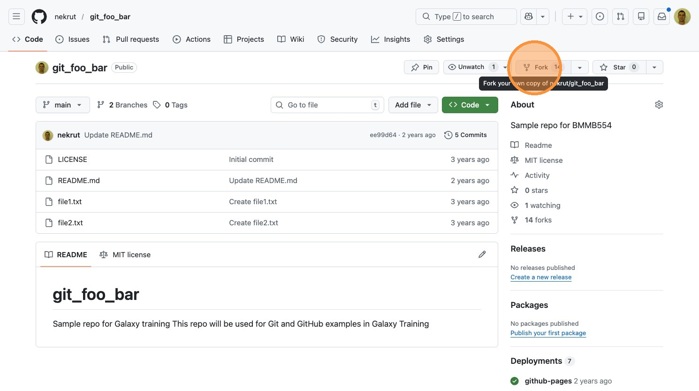
6. Navigate to your newly created fork
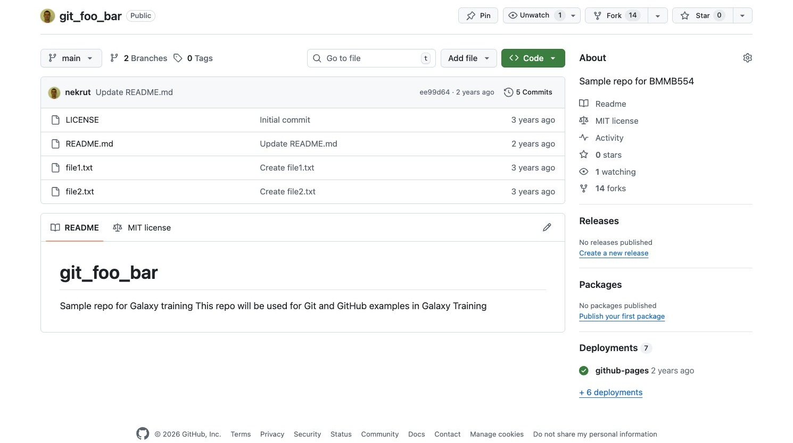
7. Click “Code”
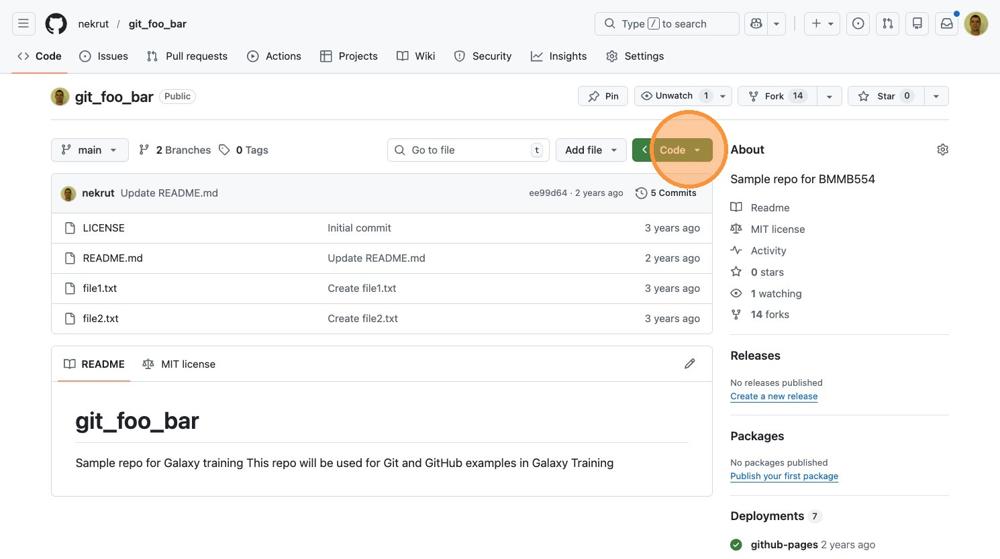
8. Click “Codespaces”
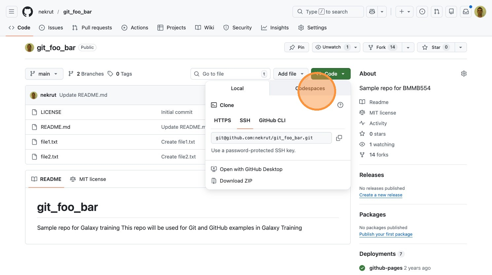
9. Click “+”.
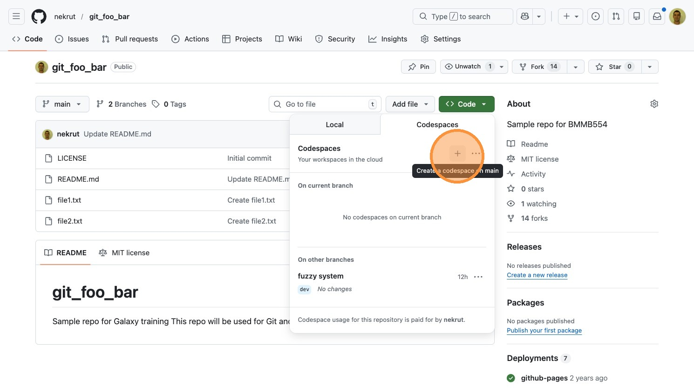
Git versus GitHub
- Git - version control system
- GitHub - hosting service
Git resources
- The Git Book
- Troubleshooting


Version control
- Manages changes over time
- Enables collaboration
- Provides complete history
You already use version control—you just don’t call it that:
- Google Docs version history — every edit is saved with a timestamp and author; you can view or restore any past version → commit history & revert
- Suggesting mode in Google Docs — proposed edits that a collaborator reviews and accepts or rejects → pull requests & code review
- Track Changes in Word — redline markup showing insertions and deletions →
git diff - Saving a video game — checkpoint your progress so you can reload if things go wrong → commits as snapshots
- Wikipedia edit history — every revision is logged; vandalism can be rolled back instantly → audit trail & revert
History
Git
Early version control systems like CVS (Concurrent Versions System) and SVN (Subversion) were centralized—all version history lived on a single server, and developers needed a network connection for most operations. This created bottlenecks and a single point of failure, especially for large projects with many contributors.
The word “git” is British slang for a stupid or unpleasant person. Torvalds joked about the name:
“I’m an egotistical bastard, and I name all my projects after myself. First ‘Linux’, now ‘git’.”
The project’s original README offered additional readings: “global information tracker” when things work, and “goddamn idiotic truckload of sh*t” when they don’t.
Linus Torvalds created Git in April 2005 after a licensing dispute forced the Linux kernel project to stop using BitKeeper, a proprietary distributed version control system the project had relied on since 2002. Torvalds designed Git to be fast, fully distributed, and capable of handling massive non-linear development—thousands of parallel branches merging constantly. Development moved remarkably quickly: Git became self-hosting within a day of its announcement, and by June 2005 it managed the Linux kernel 2.6.12 release. Torvalds handed maintenance to Junio Hamano in July 2005, who shipped the 1.0 release that December and continues to maintain the project today.
Sources: Git — Wikipedia | A Short History of Git | What does git stand for?
GitHub
Tom Preston-Werner, Chris Wanstrath, and PJ Hyett began building GitHub in late 2007 and launched a public beta in April 2008. The platform provided a web-based interface for Git repositories along with features like pull requests, issue tracking, and user profiles—making collaboration far more accessible than raw Git alone. Growth was rapid: by 2009 GitHub had over 100,000 users, and by 2011 it surpassed SourceForge and Google Code to become the largest code hosting service. Microsoft acquired GitHub in June 2018 for $7.5 billion, and the platform now hosts over 200 million repositories.
Sources: GitHub — Wikipedia | How GitHub Democratized Coding and Found a New Home at Microsoft
Basic Concepts
Main commands
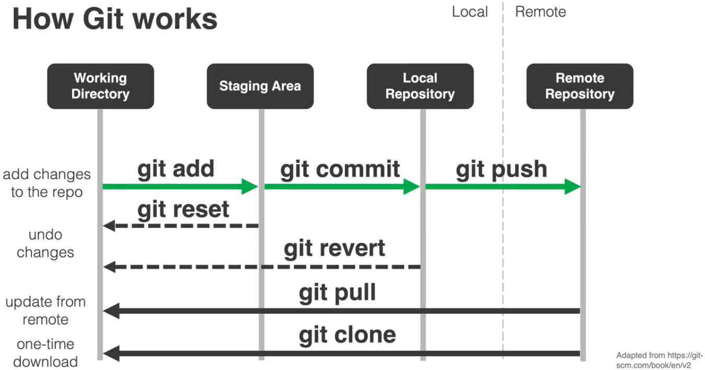
> From tutorials by Kyle BradburyBranch flow
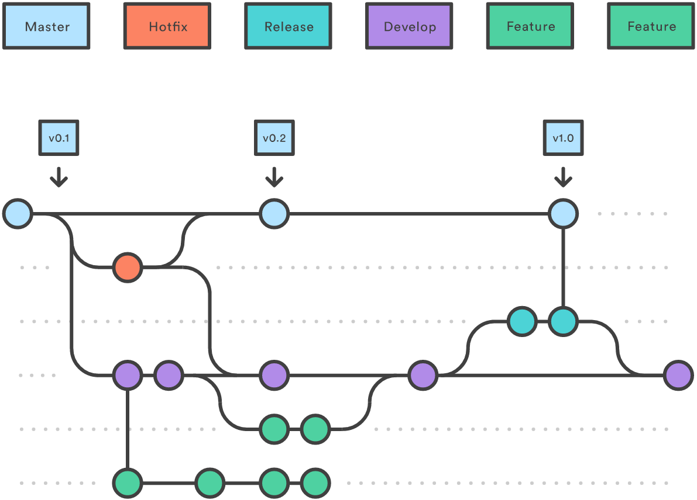
From GitBetter
Let’s try
Switch to your GitHub code space that you started, and use examples below.
Check history of this repo using git log
git logcommit de89f51d8e124665713f6fd94cd46447d172033b (HEAD -> main, origin/main, origin/HEAD)
Author: Anton Nekrutenko <anekrut@gmail.com>
Date: Tue Feb 21 08:02:50 2023 -0500
Create file2.txt
commit bc3e5c4a9d54203739bb90f29d92e20082b9e5d4
Author: Anton Nekrutenko <anekrut@gmail.com>
Date: Tue Feb 21 08:02:25 2023 -0500
Create file1.txt
commit 99dd43783be37b08c1ca80cdc881eae537526396
Author: Anton Nekrutenko <anekrut@gmail.com>
Date: Tue Feb 21 08:00:34 2023 -0500
Updated readme
commit 18ebdabfe6f92f33ea626994ce6c9998cbe63522
Author: Anton Nekrutenko <anekrut@gmail.com>
Date: Tue Feb 21 07:59:46 2023 -0500
Initial commitCheck status of the repo
git statusOn branch main
Your branch is up to date with 'origin/main'.
nothing to commit, working tree cleanLet’s change and stage a file
Use editor to modify file1.txt. Once it is saved, we can see what is happening by using git status again:
git statusOn branch main
Your branch is up to date with 'origin/main'.
Changes not staged for commit:
(use "git add <file>..." to update what will be committed)
(use "git checkout -- <file>..." to discard changes in working directory)
modified: file1.txt
no changes added to commit (use "git add" and/or "git commit -a")You can see that the file is modified but not staged. To stage it for commit you need to explicitly add it to staging:
git add file1.txtIf you run git status now you will get:
git statusOn branch main
Your branch is up to date with 'origin/main'.
Changes to be committed:
(use "git reset HEAD <file>..." to unstage)
modified: file1.txtOops: git reset
Running git reset will restore the status quo as it was prior to git add:
git resetUnstaged changes after reset:
M file1.txtand git status will look as it did prior to git add:
git statusOn branch main
Your branch is up to date with 'origin/main'.
Changes not staged for commit:
(use "git add <file>..." to update what will be committed)
(use "git checkout -- <file>..." to discard changes in working directory)
modified: file1.txt
no changes added to commit (use "git add" and/or "git commit -a")Let’s stage and commit
If you are indeed ready to go ahead let’s add:
git add file1.txtand commit
git commit -m 'modified file1'[main 476adb7] modified file1
1 file changed, 1 insertion(+), 1 deletion(-)If you run git log you will see this additional commit:
git logcommit 476adb7b64a9330199fea13ca2e7523f7fe90189 (HEAD -> main)
Author: nekrut <anekrut@gmail.com>
Date: Tue Feb 21 13:23:24 2023 +0000
modified file1or alternatively you can use --oneline flag:
git log --oneline476adb7 (HEAD -> main) modified file1
de89f51 (origin/main, origin/HEAD) Create file2.txt
bc3e5c4 Create file1.txt
99dd437 Updated readme
18ebdab Initial commitOops: git revert
To roll everything back you can do this:
git revert 476adb7[main 1f13d5f] Revert "modified file1"
1 file changed, 1 insertion(+), 1 deletion(-)In Codespaces, this opens a COMMIT_EDITMSG tab in VS Code with a pre-filled revert message. Edit the message if needed, save (Ctrl+S), and close the tab to complete the commit.
Now, let’s look at the log (showing just two last commits):
git logcommit 1f13d5fcf38057db9a90066b99aa475a6eeb1bae (HEAD -> main)
Author: nekrut <anekrut@gmail.com>
Date: Tue Feb 21 13:31:24 2023 +0000
Revert "modified file1"
This reverts commit 476adb7b64a9330199fea13ca2e7523f7fe90189.
commit 476adb7b64a9330199fea13ca2e7523f7fe90189
Author: nekrut <anekrut@gmail.com>
Date: Tue Feb 21 13:23:24 2023 +0000
modified file1Let’s actually make changes and highlight them with diff
First, let’s modify, say, file2.txt by adding a line. In this example I modified it from:
This
is
another
file
I've
madeto
This
is
file2
I've
madeNow add and commit:
git statusOn branch main
Your branch is ahead of 'origin/main' by 2 commits.
(use "git push" to publish your local commits)
Changes not staged for commit:
(use "git add <file>..." to update what will be committed)
(use "git checkout -- <file>..." to discard changes in working directory)
modified: file2.txt
no changes added to commit (use "git add" and/or "git commit -a")git add file2.txt
git commit -m 'changed file2'[main a947686] changed file2
1 file changed, 1 insertion(+), 2 deletions(-)Let’s now compare the changes between two commits:
git diff a947686 1f13d5fdiff --git a/file2.txt b/file2.txt
index 1f383ac..e13e461 100644
--- a/file2.txt
+++ b/file2.txt
@@ -1,5 +1,6 @@
This
is
-file2
+another
+file
I've
madehere:
aandb= tags of files being compared---and+++marked to indicate differences betweenaandb@@ -1,5 +1,6 @@file chunk header which has the following format:@@ [file a range][file b range] @@- File ranges are:
<start line><number of lines>
Branches
From GitBetter
To enable collaborations and to give the ability to develop major features without disrupting production (master or main) branch Git allows creation of multiple branches.
Create a new branch and switch to it
Let’s create branch dev:
git branch devto see existing branches:
git branch dev
* mainThe main branch is active (tagged with *). To actually switch branches:
git checkout devSwitched to branch 'dev'Make changes
Let’s make some changes, say, to file1.txt from this:
This
is
a
fileto this:
This
is
a
file1and then get status, add, and commit:
git statusOn branch dev
Changes not staged for commit:
(use "git add <file>..." to update what will be committed)
(use "git checkout -- <file>..." to discard changes in working directory)
modified: file1.txt
no changes added to commit (use "git add" and/or "git commit -a")git add file1.txt
git commit -m 'changes to file1.txt'[dev 05ce64d] changes to file1.txt
1 file changed, 1 insertion(+), 1 deletion(-)Switch to another branch and look at the modified file
If we switch back to main and look at the content of file1.txt we will see the “old” content:
This
is
a
fileMerge branches
To incorporate changes from dev into main we need to do a merge:
git merge dev mainUpdating a947686..05ce64d
Fast-forward
file1.txt | 2 +-
1 file changed, 1 insertion(+), 1 deletion(-)and if we look at file1.txt again we will see the change:
$ more file1.txt This is a file1
We can now delete the branch:
git branch -d devDeleted branch dev (was 05ce64d).Merging with conflicts
To simulate a merging conflict we need to make different changes to the same line of a file in different branches.
Modify file1.txt in main
First, let’s checkout main and make the following change to file1.txt, say, from
This
is
a
file1to
This
is
a
file1 - the first file we creatednow we add and commit:
git add file1.txt
git commit -m 'main changes to file1'[main dfd0598] main changes to file1
1 file changed, 1 insertion(+), 1 deletion(-)
Note
You can use git diff to see the differences between branches such as, for example:
git diff main devdiff --git a/file1.txt b/file1.txt
index f8e8191..e82ee85 100644
--- a/file1.txt
+++ b/file1.txt
@@ -1,4 +1,4 @@
This
is
a
-file1 - the first file we created
+file1Modify file1.txt in dev
Checkout dev:
git checkout devSwitched to branch 'dev'Change file1.txt, say, from:
This
is
a
file1to
This
is
a
file1 - the first filenow we add and commit:
git add file1.txt
git commit -m 'dev changes to file1'[dev b2b8b9e] dev changes to file1
1 file changed, 1 insertion(+), 1 deletion(-)Checkout main and try to merge
git merge main devAuto-merging file1.txt
CONFLICT (content): Merge conflict in file1.txt
Automatic merge failed; fix conflicts and then commit the result.If you then look at the content of the file, you will see this:
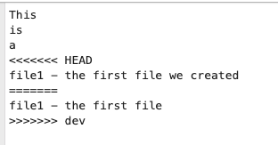
so here you need to decide which version you will keep and edit the file correspondingly. For example, I edited it to this form and saved:
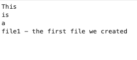
Now I need to add and commit:
git add file1.txt
git commit -m 'merged dev into main'A typical GitHub workflow
Now that we know the basics, let’s put it all together into the standard fork-based contribution workflow used in open-source projects.
The steps
1. Fork the repo on GitHub
Click the “Fork” button on the original (upstream) repository page. This creates your own copy under your GitHub account.
2. Clone your fork locally
git clone https://github.com/YOUR_USERNAME/repo_name.git
cd repo_name3. Create a new branch
Never work directly on main. Create a descriptive branch for your changes:
git checkout -b my-new-feature4. Make your changes
Edit files, add new ones—do whatever your contribution requires.
5. Stage and commit
git add changed_file.txt
git commit -m 'add new feature'6. Push the branch to your fork
git push origin my-new-feature7. Open a Pull Request on GitHub
Go to the original repo on GitHub. You’ll see a prompt to open a Pull Request from your recently pushed branch. Click it, write a description of your changes, and submit.
High-level flow
Where things live
flowchart TB A["Upstream repo<br>(GitHub)"] B["Your fork<br>(GitHub)"] C["Local clone<br>(your machine)"] A -- "fork" --> B B -- "clone" --> C C -- "push" --> B B -- "pull request" --> A
Summary
Here is what we covered in this lecture:
- Git vs GitHub — Git is a local version control system; GitHub is a cloud platform for hosting Git repos and collaborating
- Core commands —
status,add,commit,log,diff,reset,revert - Branching —
branch,checkout,mergelet you work on features in isolation and combine them later - Merge conflicts — happen when two branches edit the same line; you resolve them manually, then
addandcommit - The fork → branch → PR workflow — the standard way to contribute to projects on GitHub
For Thursday!
Create your CV as a markdown document!